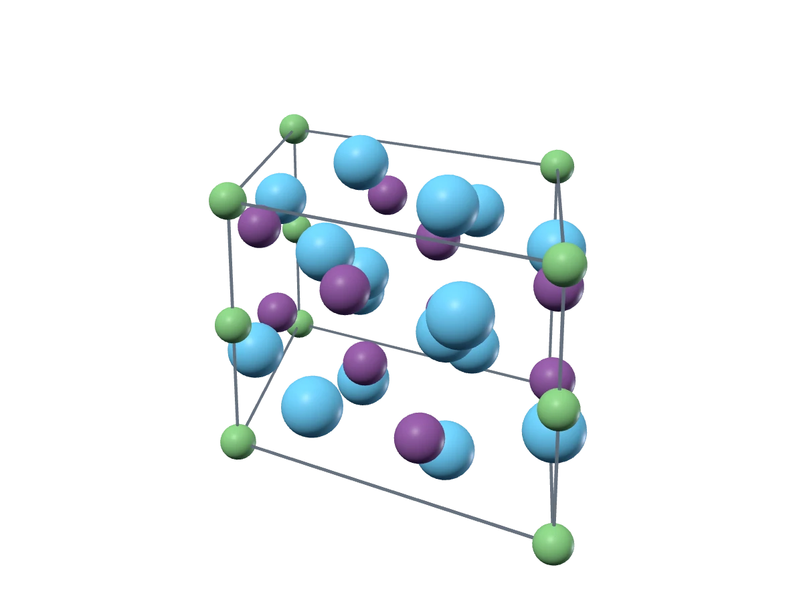

La5Bi3Cl·P63/mcmgenerated by CrystalARgenerated by CrystalAR
01The problem
Symmetry is discrete. Geometry is continuous.
A space group and its Wyckoff positions are categorical choices, while the lattice and the atomic coordinates are real numbers that have to respect them.
DraftIllustration of point, line, plane and volume sites follows in the next phase.
02Overview
One decoder, one sequence.
A single decoder-only Transformer writes the template and the lattice token by token, then refines the coordinates of every site level by level.
DraftThe architecture figure from the paper follows in the next phase.
03The method
Template first. Lattice next. Coordinates, coarse to fine.
Each Wyckoff position confines a site to a point, a line, a plane or the whole cell, and nine dyadic refinements locate it there.
DraftThree short illustrated steps follow in the next phase; the story below already shows them on a real crystal.
One crystal, written in 3D
Watch CrystalAR write La5Bi3Cl.
A real sample from the final model, replayed from its stored generation record.

1Given a space group
Space group P63/mcm (No. 193) is given, and its 24 symmetry operations constrain everything that follows.
2Wyckoff template
For each site the model writes an element, then a Wyckoff position: Cl 2b and La 4d are fixed points, La 6g and Bi 6g lie on lines.
3Lattice
A hexagonal cell leaves two variables free, so the model writes V = 562.7 Å3 and c/a = 0.690.
4Coarse to fine
Nine levels each halve the region of every free coordinate, from half the line down to 1/512 of it, about 0.02 Å.
5Symmetry expansion
The symmetry operations copy each site across its orbit: 2 + 4 + 6 + 6 = 18 atoms.
Space group P6₃/mcm, given. Template: Cl 2b, La 4d, La 6g, Bi 6g. Lattice: V 562.7 ų, c/a 0.690. Coordinates over nine levels: La 6g x: level decisions 0 1 0 0 0 1 0 1 0, final value 0.2705; Bi 6g x: level decisions 1 0 0 1 1 1 0 1 0, final value 0.6143.
Sample denovo:75 from 2,500 de novo samples of the final model. Coordinates are the centers of the level-9 regions; beam statistics come from the stored search record.
04Crystals
Thirteen crystals, each replayable.
Every S.S.U.N. candidate among 2,500 samples of the final model; open one to rotate it, replay how it was written, or download its CIF.
S.S.U.N. means symmetric, stable, unique and novel. These 13 structures were judged S.S.U.N. by at least one of three MLIPs (Orb, MACE, UMA), and 3 of them by all three. Energies are signed distances to a fixed MLIP reference hull, in meV/atom. There is no DFT or experimental validation.
Benchmarks
The numbers, from the paper.
De novo generation, symmetry statistics and crystal structure prediction, each checked against the final paper.
DraftNumber cards and the full paper tables follow in the next phase.
05The paper
CrystalAR: Autoregressive Modeling for Symmetric Crystal Generation
Read the paper on arXiv, explore the code, or copy the citation below.
@misc{meng2026crystalar,
title = {CrystalAR: Autoregressive Modeling for Symmetric Crystal Generation},
author = {Ziqiao Meng and Rongsheng Chen and Zhi Zheng and Nikita Kazeev and Zhenkun Wang and Andrey Ustyuzhanin and Wee Sun Lee},
year = {2026},
eprint = {2610.27762},
archivePrefix = {arXiv},
primaryClass = {cs.AI},
url = {https://arxiv.org/abs/2610.27762}
}